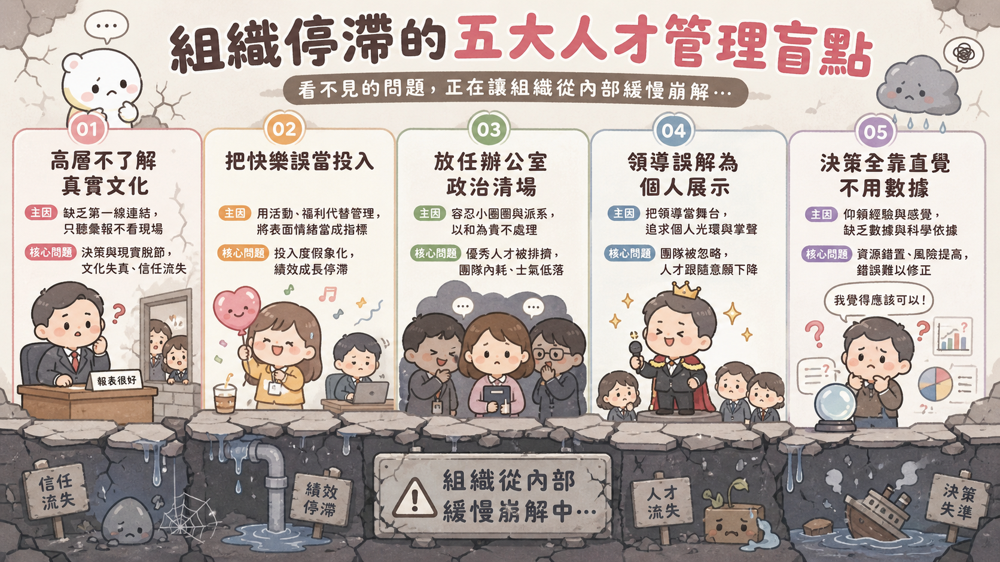

你看到了，但你說不出口
你待在一家運作超過三十年的公司，親眼看著優秀的同事一個接一個默默離職——先是財務主管，然後是研發主管，接著是供應鏈的核心人物。不是被裁員，是自己走的。
組織還在運轉。每天早上大家還是打卡、開會、交報告。數字不難看，表面上一切正常。但你能感覺到，有什麼東西正在悄悄死去。
決策越來越保守，新專案一個個被暫緩，沒人敢提意見，就算提了也沒有下文。整個組織像一台引擎還在空轉的車——噪音沒停，卻沒有在往前走。
更讓你困惑的是：掌舵的人不笨。學歷頂尖、策略思維清晰、外界評價也不差。你就是想不透，為什麼這麼聰明的人，會讓公司走到這一步？
這個困惑，幾乎是每個曾在組織中「看見問題、卻無法改變」的人，都曾深夜反覆問自己的問題。
為什麼越聰明的人，越不願意看見問題？
先說一個殘酷的事實：領導力不是學歷的副產品。
很多人當上主管，不是因為他們懂得帶人，而是因為他們的業務能力比別人強。工程師做得比別人好，就升工程師主管；業務拿下最多訂單，就升業務主管。從來沒有人在升他之前，先讓他學兩三年的管理學。
於是出現了一個奇怪的現象：職位越高的人，他的管理能力，往往是他所有能力裡面最後才練起來的。專業技術是他的強項，但建立團隊、培養人才、處理組織文化，這些能力他根本還沒學熟。
但問題更深。不只是「不懂管理」，而是很多高層主管，對自己公司的真實狀況，根本就活在另一個平行宇宙裡。
認知的落差不是偶發，是系統性的。高層主管爬得越高，他接收到的訊息就越過濾、越美化。沒有人想跟老闆說壞消息，沒有人想成為那個打壞氣氛的人。於是老闆活在一個精心維護的幻象裡，還以為那就是現實。
組織停滯的五個真正原因
根據一份涵蓋兩千五百家企業和人資主管的大型調查，研究者整理出了五個幾乎所有組織都共有的人才管理漏洞。它們看起來都不像大問題，但加在一起，就足以讓一個公司從內部緩慢崩解。

① 高層以為自己了解公司文化，但根本不了解
領導層的自我敘事與員工實際體驗相差甚遠，卻沒有人敢告訴他真相，落差只會越來越大。
② 把員工「快樂」當成目標，忽略了「投入」才是關鍵
快樂和投入是兩件事。沒有成就感，就沒有內驅力；再多福利都只是安撫，不是動力。
③ 視而不見的辦公室政治，正在悄悄清場
最先離開的往往是有能力、有原則的人。劣幣驅逐良幣悄悄發生，等領導層意識到已是數年之後。
④ 誤解了領導的本質
把個人形象放在團隊利益前面，只信自己的判斷。這不是惡意，只是從來沒人告訴他遊戲規則已經不同了。
⑤ 所有決策都靠直覺，從來不用數據
覺得這個人幹練、覺得氣場合、覺得文化不錯——這些都是單點觀察，不是組織全貌。沒有系統性衡量，人才管理永遠停留在「我感覺應該是這樣」的階段。
領導人「不是不知道」，而是他知道的跟你知道的，是兩件事
現在回頭看那個讓你困惑的問題：為什麼聰明的領導人，會做出看起來不合理的決策？
有時候答案是：他真的沒看見。不是因為笨，而是因為他所在的高度，讓他幾乎不可能看見你看見的東西。每一層過濾、每一次美化過的匯報、每一個不敢說實話的中間人，都讓他和現實之間隔了一層厚厚的玻璃。
有時候答案是：他看見了，但他能動的時間有限、精力有限。一個管轄十幾個子公司的集團負責人，他沒有辦法深入了解每一家公司的人事動態。他只能信任他信任的人，授權他認為可靠的代理人。
還有一種可能，是最讓人不舒服的那種：領導人其實也沒有你想像中那麼高明。他在擅長的事情上確實很出色，但在他不擅長的構面，他的判斷可能跟任何人一樣有盲點，甚至更多——因為他已經太久沒有人敢跟他說不了。
改變從哪裡開始
診斷完問題，還要知道怎麼動手。五個盲點對應四個行動方向，每一個都是對症下藥：
去摸清公司的真實文化——不是老闆相信的那個版本
匿名問卷、非正式一對一、誠實記錄離職面談。方法不複雜，難的是願意承認現實可能跟你想的不一樣。
把「員工快樂嗎？」換成「員工投入嗎？」
不是問「你快樂嗎」，而是問「你覺得你的工作有沒有帶來影響？你有沒有成長的空間？」
正視辦公室政治，而不是假裝它不存在
定期觀察、主動介入——誰在結盟、誰被孤立、升遷標準有沒有被小圈圈悄悄扭曲。
用客觀標準衡量領導潛力，而不是靠感覺用人
真正要問的是：這個人能不能把團隊利益放在個人利益前面？他有沒有帶出比自己更強的人？
結語
這四件事，說起來都不難。難的是：它們每一件都需要主管願意主動承認「我可能沒看清楚」——而這，恰恰是很多成功者最難開口說出的話。
如果你在一個組織裡，親眼目睹以上這些場景，你能做的事情是什麼？
你未必有權力推動全面改革，但你能從自己的職責範圍開始：讓真實的數據而非美化的報告呈現出來，讓你直接影響的人感到投入而非只是快樂，讓至少一次升遷決策，是靠標準而非靠直覺做出的。
組織不是突然停滯的，要改變，也是同樣的路徑——一個決定、一次真實的對話，慢慢累積出來的。